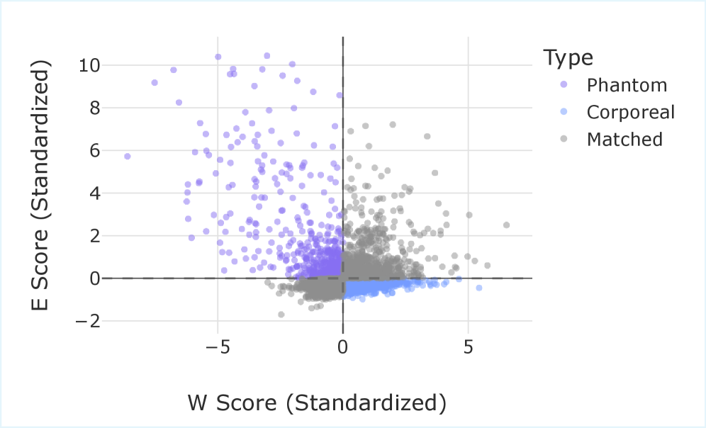

Why it matters왜 중요한가
A state channel's weight magnitude tells you almost nothing about whether the model actually uses it.
상태 채널의 가중치 크기는 그 채널을 모델이 실제로 쓰는지에 대해 거의 아무것도 말해주지 않는다.
During autoregressive generation, Mamba-2 must load and store its recurrent state at every step, so the 8× larger state directly saturates memory bandwidth. Compressing it is the cheapest path to faster SSM inference — but only if you prune the right channels. The paper's central observation is a proxy failure: there is essentially no correlation between a state's static weight norm and its dynamic energy. Magnitude pruning therefore discards high-activity phantom states (low weight, high use) while preserving inert corporeal states (high weight, low use). GHOST reframes the choice as an information-flow question — keep channels that are both reachable (controllable) and impactful (observable).
자기회귀 생성 동안 Mamba-2는 매 스텝마다 순환 상태를 적재·저장해야 하므로, 8배 커진 상태는 곧바로 메모리 대역폭을 포화시킨다. 이를 압축하는 것이 SSM 추론을 빠르게 하는 가장 저렴한 길이지만, 단 올바른 채널을 잘라야만 한다. 이 논문의 핵심 관찰은 대리 지표의 실패다 — 상태의 정적 가중치 노름과 동적 에너지 사이에는 사실상 상관이 없다. 그래서 크기 기반 가지치기는 활동이 큰 phantom 상태(낮은 가중치, 높은 사용)를 버리고, 활동이 없는 corporeal 상태(높은 가중치, 낮은 사용)를 남긴다. GHOST는 이 선택을 정보 흐름의 문제로 재정의한다 — 도달 가능하고(가제어성) 동시에 영향력 있는(가관측성) 채널을 남긴다.

By the numbers핵심 숫자
reduction (κ)상태 차원
감축률 (κ)
(14.23 vs 13.17 dense, 1.3B)50% 시 PPL 증가
(14.23 vs dense 13.17, 1.3B)
(Taylor needs 45 GB)최대 VRAM
(Taylor는 45 GB 필요)
per layer · no gradients레이어당
순방향 패스 · 무그래디언트
where it stays usable사용 가능한
모델 규모 범위
(within 0.22% of dense)PIQA 정확도
(dense와 0.22% 차)
Results — robust where gradient pruning collapses결과 — 그래디언트 가지치기가 무너지는 곳에서 견고
| Model | Dense | Taylor | GHOST | Δ vs Dense |
|---|---|---|---|---|
| 130M | 25.85 | 1E16 | 29.06 | +3.21 |
| 370M | 18.13 | 12647 | 19.96 | +1.83 |
| 780M | 14.97 | 15.13 | 16.13 | +1.16 |
| 1.3B | 13.17 | 13.94 | 14.23 | +1.06 |
| 2.7B | 11.46 | 11.50 | 12.14 | +0.68 |
In one diagram한 장의 그림
Idea: balanced truncation from forward-pass statistics아이디어: 순방향 통계로부터의 균형 절단
Hidden-state covariance
Since the hidden state Ht accumulates processed inputs, its covariance / energy measures how much the input history actually drives each channel — an empirical proxy for the controllability Gramian, read straight off the forward pass.
은닉 상태 Ht는 처리된 입력을 누적하므로, 그 공분산/에너지는 입력 이력이 각 채널을 실제로 얼마나 구동하는지를 측정한다 — 순방향 패스에서 곧바로 읽어낸 가제어성 그라미안의 경험적 대리값이다.
Output-energy Hessian
The curvature of output energy w.r.t. the state reduces to (C′t)⊤C′t — a causal, backward-pass-free proxy for observability. Multiplying the two (P · Q) mirrors Hankel singular values, and a final square-root aligns the score with σ ≈ √λ(PQ).
상태에 대한 출력 에너지의 곡률은 (C′t)⊤C′t로 환원된다 — 역방향 패스가 필요 없는 인과적 가관측성 대리값이다. 둘을 곱한 P · Q는 한켈 특이값을 본떴고, 마지막 제곱근이 점수를 σ ≈ √λ(PQ)에 정렬시킨다.
How it works어떻게 작동하나
- Run forward, collect stats순방향 실행, 통계 수집Pass 128 WikiText-2 calibration samples through the layer and accumulate squared hidden states (controllability P) and squared C′ projections (observability Q) — no gradients, no Hessians.128개 WikiText-2 캘리브 샘플을 레이어에 통과시키며 은닉 상태 제곱(가제어성 P)과 C′ 투영 제곱(가관측성 Q)을 누적한다 — 그래디언트도, 헤시안도 없다.
- Compute saliency S = P · Q중요도 S = P · Q 계산For each state channel, multiply controllability by observability and aggregate over heads, sequence length, and the calibration set. Minimizing S provably minimizes the expected local mean-squared output error.각 상태 채널마다 가제어성과 가관측성을 곱하고 헤드·시퀀스 길이·캘리브 집합에 걸쳐 합산한다. S를 최소화하는 것은 기대 국소 평균제곱 출력 오차를 최소화하는 것과 (증명상) 동치다.
- Inter-group threshold그룹 간 임계화Pool the G×N scores across all GQA groups in the layer and pick one global threshold τ for the target sparsity κ. Complex groups keep more channels; redundant groups are pruned harder — adaptive capacity allocation.레이어 내 모든 GQA 그룹의 G×N 점수를 함께 풀링하고 목표 희소도 κ에 맞춰 하나의 전역 임계값 τ를 정한다. 복잡한 그룹은 더 많은 채널을 남기고, 중복 그룹은 더 강하게 가지친다 — 적응적 용량 배분.
- Mask & sequential update마스킹 후 순차 갱신Zero out WB, WC, and convolution filters per the mask, then recompute activations to calibrate the next layer — this sequential update mitigates the distribution shift that wrecks one-shot gradient methods.마스크에 따라 WB·WC·컨볼루션 필터를 0으로 만든 뒤 활성값을 다시 계산해 다음 레이어를 캘리브한다 — 이 순차 갱신이 일회성 그래디언트 기법을 망가뜨리는 분포 이동을 완화한다.
What to take away그래서, 가져갈 것
Cheap fidelity. Matches gradient-based Taylor pruning quality at 50% sparsity using only forward passes — 15 GB vs 45 GB VRAM, fitting on a single 40 GB A100 where Taylor cannot.
저렴한 충실도. 순방향 패스만으로 50% 희소화에서 그래디언트 기반 Taylor 품질에 필적 — 15 GB vs 45 GB VRAM으로, Taylor가 못 들어가는 40 GB A100 한 장에 들어간다.
Dynamics over magnitude. Scoring by controllability × observability exorcises corporeal states and preserves phantom ones — the right answer to a proxy that weight norms get wrong.
크기보다 동역학. 가제어성 × 가관측성으로 채점해 corporeal 상태를 쫓아내고 phantom 상태를 보존한다 — 가중치 노름이 틀리는 대리 문제에 대한 올바른 답이다.
Stable across scale. Where Taylor explodes (130M → 1E16, 370M → 12647 PPL), GHOST degrades smoothly and even leads on small models and OOD math/code.
규모 전반에서 안정. Taylor가 폭발하는 지점(130M → 1E16, 370M → 12647 PPL)에서 GHOST는 매끄럽게 저하되며, 소형 모델과 OOD 수학/코드에서는 오히려 앞선다.
O(G·N) memory. Only N statistics per group — no O(N²) covariance or Hessian storage — and two forward passes that match a normal inference pass in cost.
O(G·N) 메모리. 그룹당 N개 통계만 저장 — O(N²) 공분산이나 헤시안 저장 없음 — 비용이 일반 추론 패스와 같은 두 번의 순방향 패스로 끝난다.